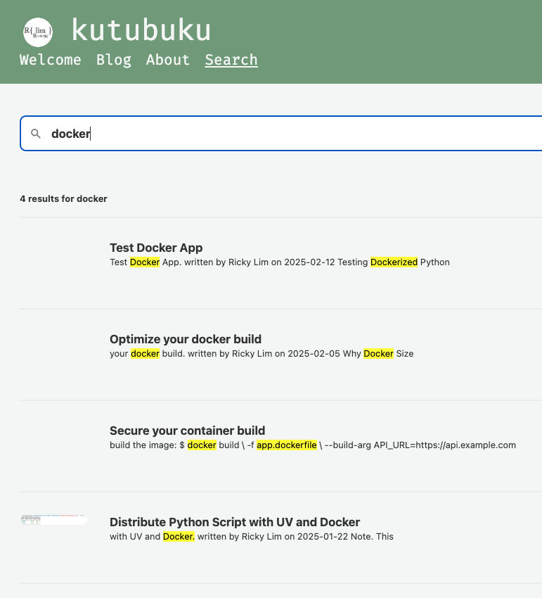

kutubuku
kutubuku
As your blog content grows, finding specific posts can feel like searching for a needle in a haystack. Without a search feature, you'd be endlessly scrolling through content, your hands getting tired and your patience wearing thin. This is where search comes to the rescue.
During one of Michael Kennedy's Python Podcast episodes, I heard about Pagefind. The tool immediately caught my attention, because of its simplicity.
In this simple static blog site, my true desire is to maintain simplicity while adding search functionality.
For static sites like mine, Pagefind adds search magically by:
Creating a search index by scanning through my site's HTML files.
Think of a search index like a book's index at the back. Instead of flipping through the entire book, you can quickly look it up in the index.
Requiring no complex server-side infrastructure.
In this post, I'll walk you through how I added search to my blog using Pagefind. This how my search's page looks like on my blog, https://ricky-lim.github.io/search/:

Getting started with Pagefind is a breeze.
# If you want to install it globally
npm install -g pagefind
# Or just want to use it without installing it globally
npx pagefind
The process is as follows:
1. Build your static HTML files:
lektor build --output-path ./public
2. Generate the search index:
npx pagefind --site ./public
3. Integrate the search interface üîç
Add these few lines to your HTML file:
{% block extra_head %}
<link rel="stylesheet" href="{{ '/pagefind/pagefind-ui.css'|url }}">
{% endblock %}
{% block scripts %}
<script src="/pagefind/pagefind-ui.js"></script>
<script>
window.addEventListener('DOMContentLoaded', (event) => {
new PagefindUI({
element: "#search",
showSubResults: true
});
});
</script>
{% endblock %}
Extras:
data-pagefind-body attribute. For example:<div data-pagefind-body>
<h1>My Blog Post</h1>
<p>This is the content of my blog post.</p>
</div>
The simple infrastructure of Pagefind allows easy automation. Here's my Github Actions workflow looks like:
... # previous steps omitted for brevity
jobs:
build:
- name: Build site
working-directory: kutubuku
run: lektor build --output-path ./public
- name: Install Pagefind
run: npm install -g pagefind
- name: Index site
working-directory: kutubuku
run: pagefind --site public
Now every merge to a main branch will automagically rebuild the search index!, keeping your content searchable with ease.
Found a cool way to enhance Pagefind? Built something awesome with Lektor? Let's learn from each other and make our site better together.
Connect with me and share your stories!